Further stress-helper results in MAM, Koren, and the Simanim Tanakh
The table lists differences from MAM in Koren and the Simanim Tanakh beyond those in the original set of comparisons.
| Verse | Difference | Scan crop | |
|---|---|---|---|
MAMיִהְיֶֽה־לְךָ֩ Korenיִהְיֶ֣ה לְךָ֩ | Exod 20:2 appendix p. 38 עליון | Different grouping Koren has munaḥ on יִהְיֶה and a space where MAM has maqaf. The telisha qetanna on לְךָ agrees, and neither has a helper. |  |
MAMוּבִנְךָֽ־וּ֠בִתֶּ֠ךָ Korenוּבִנְךָ֣ וּ֠בִתֶּ֠ךָ | Exod 20:9 appendix p. 38 עליון | Different grouping Koren has munaḥ on וּבִנְךָ and a space where MAM has maqaf. The telisha gedolah on וּבִתֶּךָ and its helper on tav agree. | 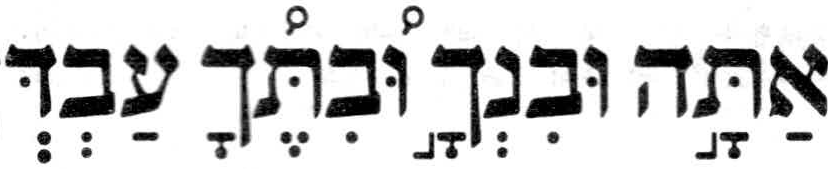 |
MAMעַמֻּֽדֵיהֶם֙ Korenעַמֻּֽדֵיהֶ֣ם | Exod 27:16 p. 125 | Different accent Koren has munaḥ on he where MAM has pashta. | 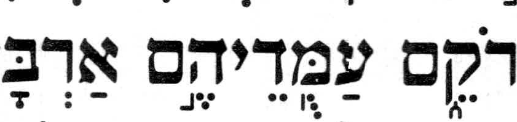 |
MAMוּלְמַטֵּה֙ Koren / SimTanוּלְמַטֵּ֖ה | Num 34:20 Koren p. 266 SimTan p. 280 | Different accent Both editions have tipeḥa on tet where MAM has pashta. | Koren SimTan SimTan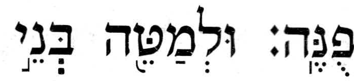 |
MAMיִהְיֶֽה־לְךָ֩ Korenיִֽהְיֶ֣ה לְךָ֩ | Deut 5:6 appendix p. 39 עליון | Different grouping Koren’s maqaf joins לֹא to יִהְיֶה and a space precedes לְךָ, where MAM’s maqaf joins יִהְיֶה to לְךָ. The telisha qetanna on לְךָ agrees, and neither has a helper. |  |
MAMוְיוֹם֙ SimTanוְי֨וֹם | Deut 5:13 p. 298 תחתון | Different accent The Simanim Tanakh has qadma on yod where MAM has pashta. |  |
MAMאַתֶּם֙ Korenאַתֶּ֤ם | Josh 1:11 p. 1 | Different accent Koren has mahapakh on tav where MAM has pashta. |  |
MAMלָ֠מָה Koren / SimTanלָ֠מָ֠ה | Josh 7:7 Koren p. 10 SimTan p. 366 | SH in both printed editions only Both editions have a telisha gedolah helper on mem. | Koren 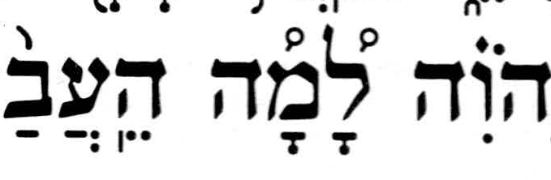 SimTan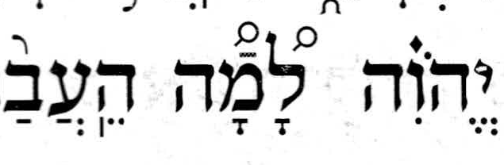 |
MAMלִּֽירִיחוֹ֙ Korenלִֽירִיח֣וֹ | Josh 8:2 p. 11 | Different accent Koren has munaḥ on ḥet where MAM has pashta. | 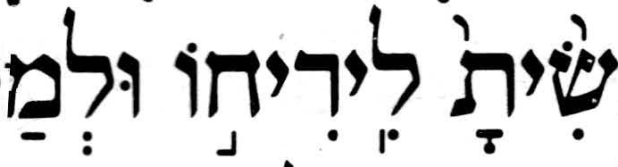 |
MAMכַּֽאֲשֶׁר֙ Korenכַּֽאֲשֶׁר֩ | Josh 14:11 p. 24 | Different accent Koren has telisha qetanna on resh where MAM has pashta. |  |
MAMוְנָסַב֩ Korenוְ֠נָסַ֠ב | Josh 15:10 p. 25 | Different accent Koren has telisha gedolah on vav, with a helper on samekh, where MAM has telisha qetanna. |  |
MAMוַיֹּֽאמְרוּ֙ SimTanוַיֹּֽאמְר֨וּ | Judg 21:16 p. 445 | Different accent The Simanim Tanakh has qadma on resh where MAM has pashta. | 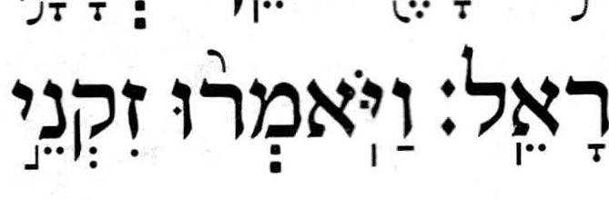 |
MAMלֹא֙ Korenלֹ֔א | 1Sam 2:16 p. 91 | Different accent Koren has zaqef on lamed in both the ketiv in the text and the qere in the margin. MAM has pashta on the qere. |  |
MAMאִֽיכָבוֹד֙ Korenאִ֤י כָבוֹד֙ | 1Sam 4:21 p. 95 | Different grouping Koren has two chanted words, with mahapakh on the first and pashta on the second, where MAM has one. The pashta agrees, and neither has a helper. |  |
MAMוַיֹּאמֶר֮ Koren / SimTanוַיֹּ֘אמֶר֮ | 1Sam 17:37 Koren p. 117 SimTan p. 479 First occurrence | SH in both printed editions only Both editions have a zarqa helper on yod. | Koren 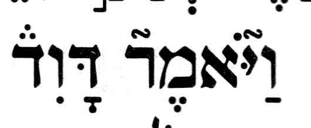 SimTan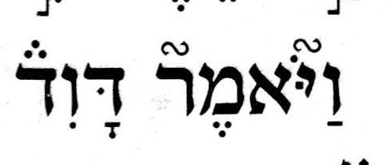 |
MAMלָלֶכֶת֮ Koren / SimTanלָלֶ֘כֶת֮ | 1Sam 17:39 Koren p. 117 SimTan p. 479 First occurrence | SH in both printed editions only Both editions have a zarqa helper on the second lamed. | Koren 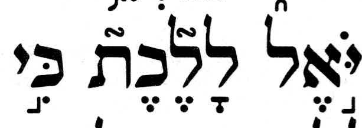 SimTan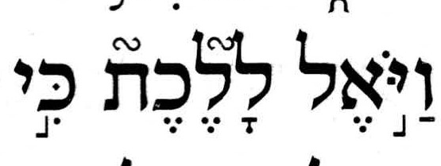 |
MAMוַיֹּאמֶר֩ Koren / SimTanוַיֹּ֩אמֶר֩ | 1Sam 26:15 Koren p. 134 SimTan p. 498 | SH in both printed editions only Both editions have a telisha qetanna helper on yod. | Koren 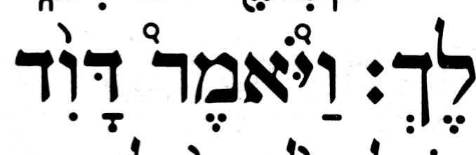 SimTan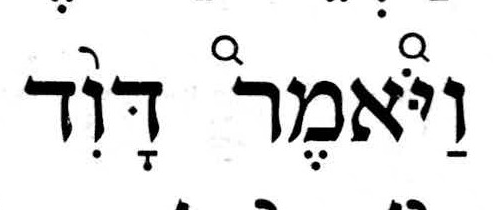 |
MAMוְיָשֹׁב֙ Korenוְיָשֹׁ֤ב | 1Sam 29:4 p. 138 | Different accent Koren has mahapakh on shin where MAM has pashta. |  |
MAMאֶל־מוּל֙ Korenאֶל־מ֨וּל | 2Sam 11:15 p. 156 | Different accent Koren has qadma on mem where MAM has pashta. |  |
MAMמִדָּן֙ Korenמִדָּ֣ן | 2Sam 17:11 p. 169 | Different accent Koren has munaḥ on dalet where MAM has pashta. | 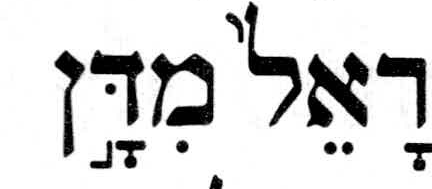 |
MAMאַ֠חֲרֵי Koren / SimTanאַֽ֠חֲרֵ֠י | 2Sam 19:31 Koren p. 175 SimTan p. 541 | SH in both printed editions only Both editions have a telisha gedolah helper on resh. | Koren 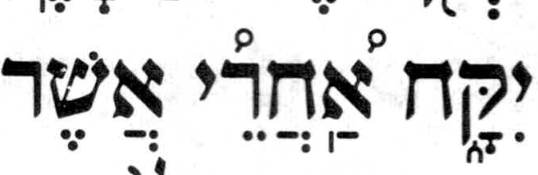 SimTan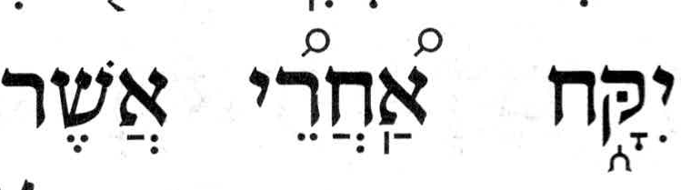 |
MAMאֱלֹהֵי֙ Korenאֱלֹהֵ֤י | 1Kgs 18:36 p. 230 | Different accent Koren has mahapakh on he where MAM has pashta. | 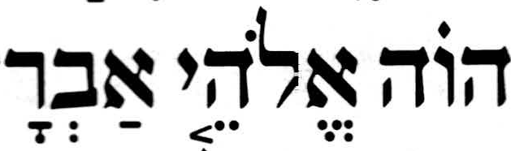 |
MAMוְהִנֵּה֙ Korenוְהִנֵּ֤ה | 2Kgs 1:9 p. 241 | Different accent Koren has mahapakh on nun where MAM has pashta. | 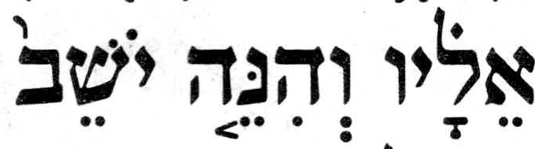 |
MAMוַיִּשְׁלַח֙ Korenוַיִּשְׁלַ֤ח | 2Kgs 5:8 p. 248 | Different accent Koren has mahapakh on lamed where MAM has pashta. | 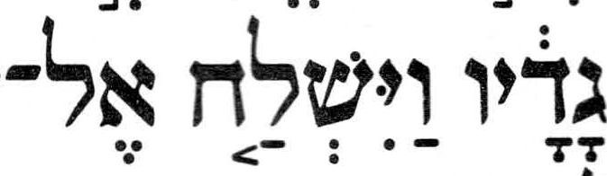 |
MAMוַיִּוָּעַץ֙ Korenוַיִּוָּעַ֤ץ | 2Kgs 6:8 p. 250 | Different accent Koren has mahapakh on ayin where MAM has pashta. |  |
MAMוַיָּשֻׁבוּ֮ Koren / SimTanוַיָּשֻׁ֘בוּ֮ | 2Kgs 9:36 Koren p. 258 SimTan p. 631 | SH in both printed editions only Both editions have a zarqa helper on shin. | Koren 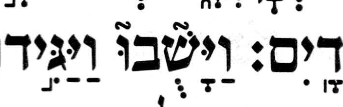 SimTan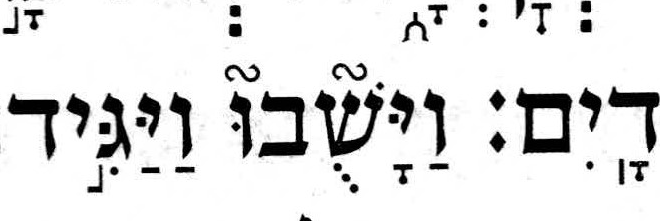 |
MAMלָ֠כֵן Koren / SimTanלָ֠כֵ֠ן | Isa 10:16 Koren p. 303 SimTan p. 678 | SH in both printed editions only Both editions have a telisha gedolah helper on kaf. | Koren 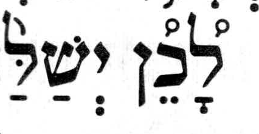 SimTan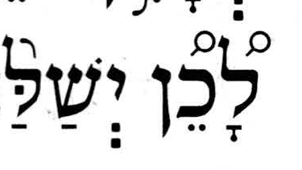 |
MAMאֶת־הַכֶּסֶף֩ Koren / SimTanאֶת־הַכֶּ֩סֶף֩ | Isa 39:2 Koren p. 332 SimTan p. 708 | SH in both printed editions only Both editions have a telisha qetanna helper on kaf. | Koren 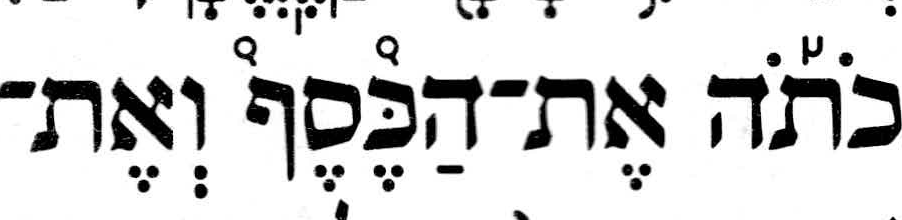 SimTan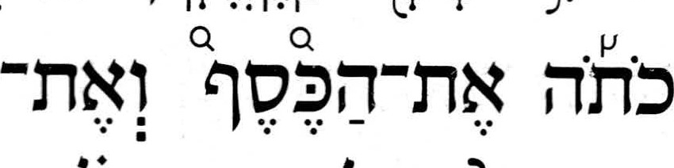 |
MAMפָ֠נַי Koren / SimTanפָ֠נַ֠י | Jer 21:10 Koren p. 393 SimTan p. 775 | SH in both printed editions only Both editions have a telisha gedolah helper on nun. | Koren 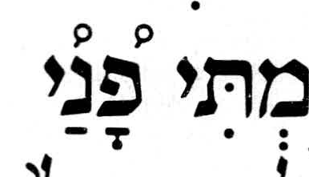 SimTan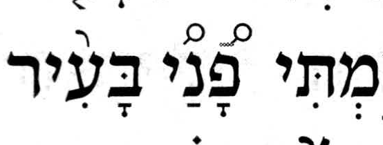 |
MAMיַעֲקוֹב֩ Koren / SimTanיַֽ֠עֲק֠וֹב | Jer 33:26 Koren p. 416 SimTan p. 800 | Different accent Both editions have telisha gedolah on yod, with a helper on qof, where MAM has telisha qetanna. | Koren SimTan SimTan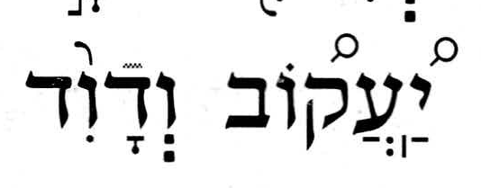 |
MAMאֶל־גְּדַלְיָהוּ֩ Koren / SimTanאֶל־גְּדַלְיָ֩הוּ֩ | Jer 40:15 Koren p. 428 SimTan p. 813 | SH in both printed editions only Both editions have a telisha qetanna helper on yod. | Koren 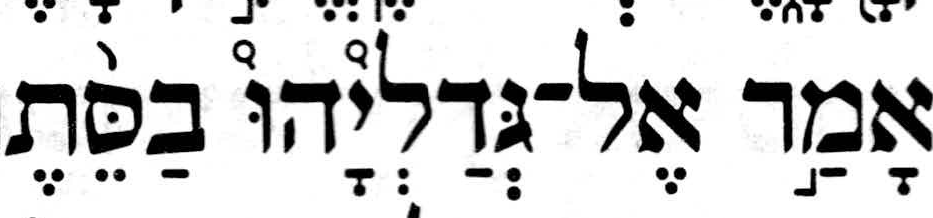 SimTan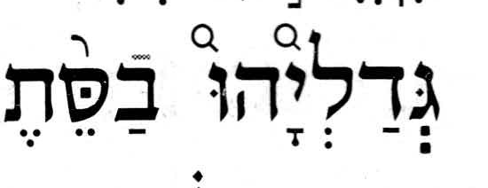 |
MAMכׇּל־הָרָעָה֙ Korenכׇּל־הָ֣רָעָ֔ה | Jer 41:11 p. 429 | Different accent Koren has munaḥ on the first he and zaqef on ayin where MAM has pashta. | 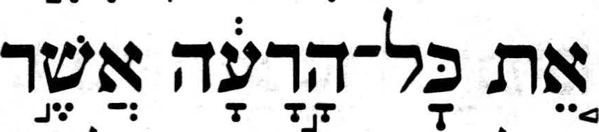 |
MAMוַיְהִי֩ Korenוַ֠יְהִ֠י | Jer 43:1 p. 431 | Different accent Koren has telisha gedolah on vav, with a helper on he, where MAM has telisha qetanna. |  |
MAMאֵין֙ Korenאֵ֣ין | Jer 49:1 p. 439 First occurrence | Different accent Koren has munaḥ on alef where MAM has pashta. | 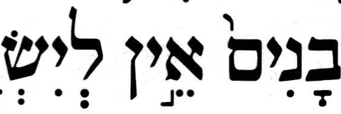 |
MAMלֶחֶם֒ Koren / SimTanלֶ֒חֶם֒ | Ezek 13:19 Koren p. 468 SimTan p. 858 | SH in both printed editions only Both editions have a segolta helper on lamed. | Koren 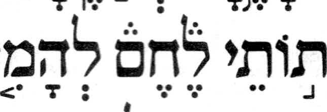 SimTan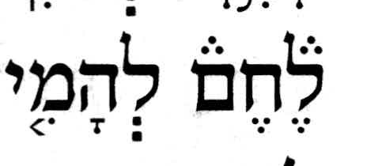 |
MAMהָאֵלֶּה֮ Koren / SimTanהָאֵ֘לֶּה֮ | Ezek 14:16 Koren p. 470 SimTan p. 859 | SH in both printed editions only Both editions have a zarqa helper on alef. | Koren 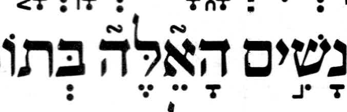 SimTan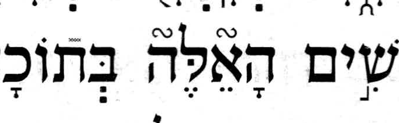 |
MAMוְנִכְלַמְתְּ֒ Koren / SimTanוְנִכְלַ֒מְתְּ֒ | Ezek 16:61 Koren p. 474 SimTan p. 864 | SH in both printed editions only Both editions have a segolta helper on lamed. | Koren SimTan SimTan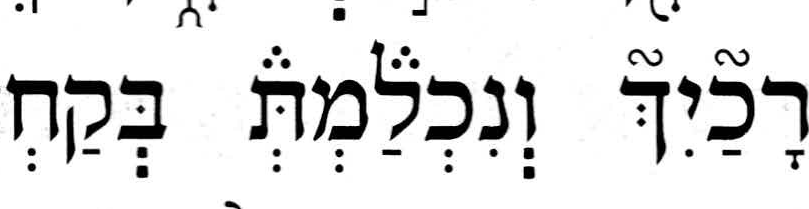 |
MAMבִּמְקוֹם֙ Korenבִּמְק֤וֹם | Ezek 17:16 p. 475 | Different accent Koren has mahapakh on qof where MAM has pashta. | 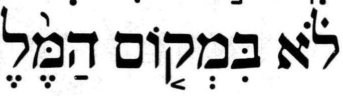 |
MAMאַתֶּם֙ Korenאַתֶּ֤ם | Ezek 18:2 p. 476 | Different accent Koren has mahapakh on tav where MAM has pashta. | 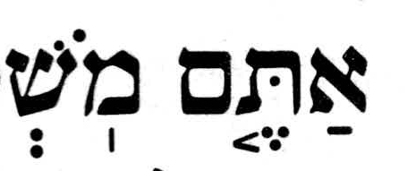 |
MAMאַתֶּם֩ Korenאַתֶּ֨ם | Ezek 20:31 p. 480 | Different accent Koren has qadma on tav where MAM has telisha qetanna. | 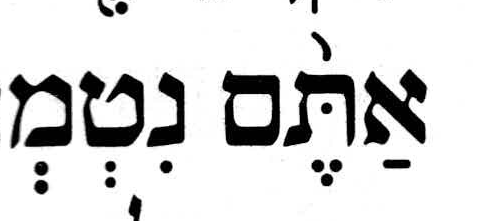 |
MAMדְּדָן֙ Korenדְּדָ֖ן | Ezek 27:20 p. 492 | Different accent Koren has tipeḥa on the second dalet where MAM has pashta. |  |
MAMבְּכֹל֙ Korenבְּכׇל־ | Ezek 31:12 p. 498 | Different accent Koren has a maqaf to אֲפִיקֵי where MAM has pashta. | 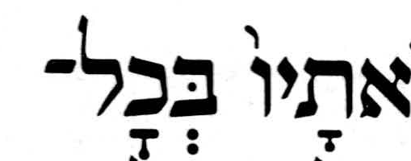 |
MAMזָנַח֙ Korenזָנַ֤ח | Hos 8:5 p. 536 | Different accent Koren has mahapakh on nun where MAM has pashta. |  |
MAMמִן־הַבַּיִת֒ Koren / SimTanמִן־הַבַּ֒יִת֒ | Amos 6:10 Koren p. 550 SimTan p. 949 | SH in both printed editions only Both editions have a segolta helper on bet. | Koren 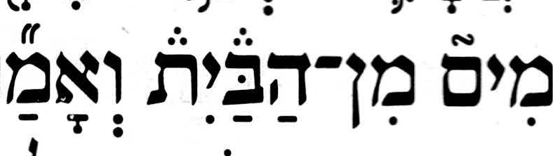 SimTan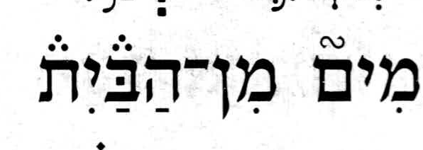 |
MAMאֶסְתֵּר֙ Korenאֶסְתֵּ֖ר | Esth 4:10 p. 192 | Different accent Koren has tipeḥa on tav where MAM has pashta. |  |
MAMפַּרְזְלָא֙ Korenפַּרְזְלָ֤א | Dan 2:43 p. 207 First occurrence | Different accent Koren has mahapakh on lamed where MAM has pashta. |  |
MAMבְּמַלְכוּתָם֩ Koren / SimTanבְּ֠מַלְכוּתָ֠ם | Neh 9:35 Koren p. 262 SimTan p. 1342 | Different accent Both editions have telisha gedolah on bet, with a helper on tav, where MAM has telisha qetanna. | Koren 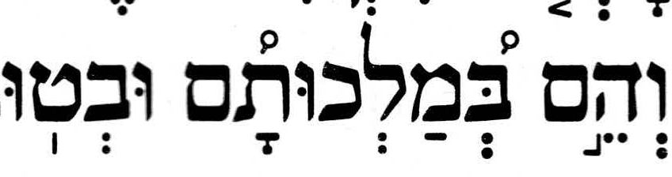 SimTan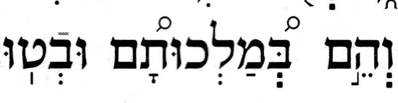 |
MAMוְיוֹיָדָע֙ Korenוְיֽוֹיָדָ֖ע | Neh 12:11 p. 266 | Different accent Koren has tipeḥa on dalet where MAM has pashta. | 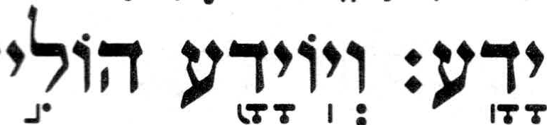 |
MAMוַֽאֲבָנִים֙ Korenוַֽאֲבָנִ֛ים | 1Chr 22:14 p. 307 | Different accent Koren has tevir on nun where MAM has pashta. | 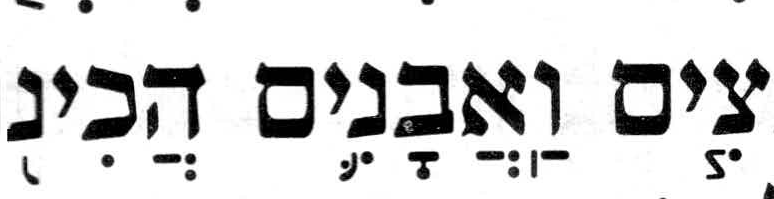 |
MAMמְרָרִי֙ Korenמְרָרִ֖י | 1Chr 24:26 p. 309 | Different accent Koren has tipeḥa on the second resh where MAM has pashta. | 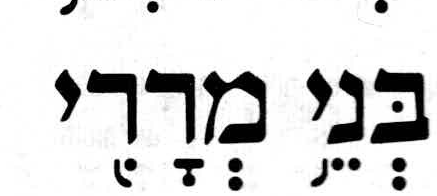 |
MAMבַּתִּים֙ Korenבַּתִּ֖ים | 2Chr 2:9 p. 320 First occurrence | Different accent Koren has tipeḥa on tav where MAM has pashta. |  |
MAMשְׁלֹמֹה֙ Korenשְׁלֹמֹ֖ה | 2Chr 8:3 p. 329 | Different accent Koren has tipeḥa on mem where MAM has pashta. | 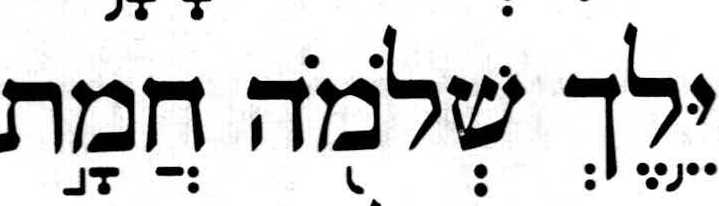 |
MAMחָשַׁק֙ Korenחָשַׁ֜ק | 2Chr 8:6 p. 329 | Different accent Koren has geresh on shin where MAM has pashta. |  |
MAMלָֽבְשָׁה֙ Korenלָֽבְשָׁ֤ה | 2Chr 24:20 p. 352 | Different accent Koren has mahapakh on shin where MAM has pashta. | 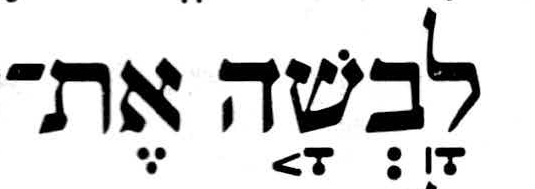 |
MAMעַתָּה֙ Koren / SimTanעַתָּ֨ה | 2Chr 29:31 Koren p. 360 SimTan p. 1447 | Different accent Both editions have qadma on tav where MAM has pashta. | Koren SimTan  |
MAMאֱלֹהֵי֙ Korenאֱלֹהֵ֤י | 2Chr 30:6 p. 361 | Different accent Koren has mahapakh on he where MAM has pashta. |  |


The Koren Classic Tanakh, Classic Edition, Large Size. Koren Publishers Jerusalem Ltd. © 1962, 2020 for font and text design.
Torah Nevi’im Ketuvim Simanim, Elḥanan Yosef edition, Jerusalem 5775. © 5783 Shmuel Meir Riachi and Feldheim Publishers.
The crops show the printed editions at the locations compared in the table.
MAM text from MAM-with-doc, based on Miqra according to the Masorah at Hebrew Wikisource, CC BY-SA 4.0.